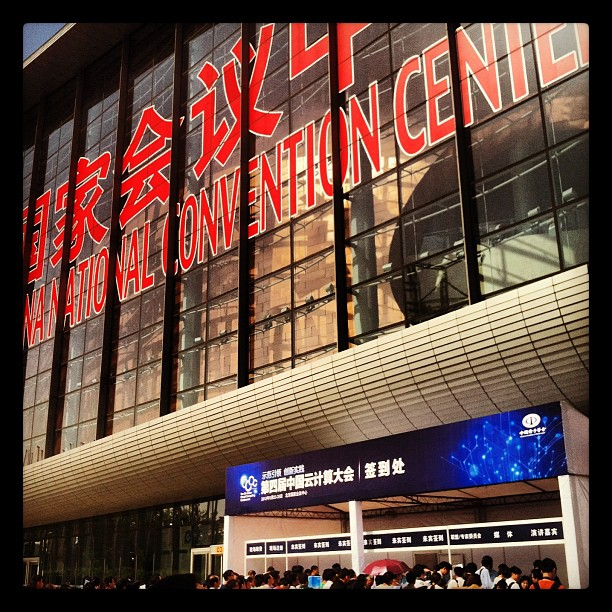

5月20到24日上了一趟北京。主要是见一下北京公司的云计算团队，了解并学习一下他们的云呼叫中心产品是如何运营推广的，顺便也和小华见一家ISP。本来打算周二就回来了，结果临时通知有个云计算大会可以参加，于是又多留了两天。
这是我第一次去北京，虽然是公事，但也抽空到故宫、天安门、西单、圆明园逛了一下，回头再把照片整到相册里。
我想着重讲讲这个工信部组织的云计算大会。

大会一共开了三天，不过我仅以嘉宾的身份参加了第一天的活动就匆忙回来了。公有云、私有云、混合云、开放云平台、云管理、云安全各种各样的概念，传统CPU厂商、硬盘厂商、服务器厂商、虚拟化厂商、安全厂商、应用厂商、集成商甚至于中国移动都在本次云计算大会上亮出了自己的「云」产品。每家厂商都将自己理论上最优势的领域展现给大家，即使有些可能还不是特别完善或者只是停留在概念上又或者以静态demo的形式，IBM的专场内容与之前在福州听的那场软件高峰论坛内容差不多。有几个外国人助阵的主题会议，由于自己英文水平有限，实在听不懂，所以干脆直接撤了。
从我看到的东西上来说，这次展会中大家所说的云计算基本上可以分为几个类型，这里并不是要说IaaS、PaaS和SaaS，而是中国人自己的云计算。
第一、IT基础架构建设
很多到现场去吹嘘云计算的厂商，其实就是传统的硬件厂商，他们讲得就是如何利用远程管理和虚拟化技术，来帮助那些大型企业或机构，管理他们的服务器资源，有些还能够对桌面资源进行有限的管理。
第二、传统软件
所有的传统软件，不论是医疗、还是公共设施管理、还是其他的行业软件，只要是有服务器，可以进行远程访问、数据同步的，就都算是云计算了。这些系统，有些使用了云计算的底层架构（IaaS），有些则按照云计算的按照实际使用来计量付费的方式调整了服务条款，当然也有些则基本上没有任何改变。这些软件已经堂而皇之的将自己称作是私有云的案例了。
第三、硬件，特别是服务器厂商
做云计算，肯定是离不开服务器的，那么云计算大会里面摆放一些服务器，装点一下门庭，总是需要的。
第四、公有云
这次主要是看到阿里云的展台，他们还在不遗余力的推广他们收购了万网之后推出的公有云平台。这一块的市场，确实需要教育，早期的耕耘者不一定能够在市场成熟的时候享受到自己播种的果实，但是早期的耕耘者总是值得尊敬的。
第五、云存储
云存储大概是现在广大用户和大多数企业、机构们最能够理解和接受的一种云计算服务模式了。现场展示的，大多是一些私有云的技术。也就是帮助那些机构和组织，建立内部的云存储和网盘，以便方便他们的办公使用。
第六、和云有关、无关的其他
大会上还有一些和云计算有关的东西，比如和云计算相关的培训。帮助毕业生能够掌握一些云计算相关的知识。以及一些政府代表团，展示当地政府如何扶植云计算事业等等。
国人其实还没有从云计算的迷茫中清醒过来。由于国家的大力投入，那些聪明人们，纷纷的将自己原有的业务，包装上了云计算的外衣，这不可避免的更加加剧了国人对于云计算的迷茫。也许再过上一两年，有了新的热点，那些聪明人转向了新的热点，国人们才能够看到什么才是真正的云计算吧。只是不知道到了那个时候，云计算大会上还能剩下哪些企业，或者那个是是不是还能够有云计算大会？